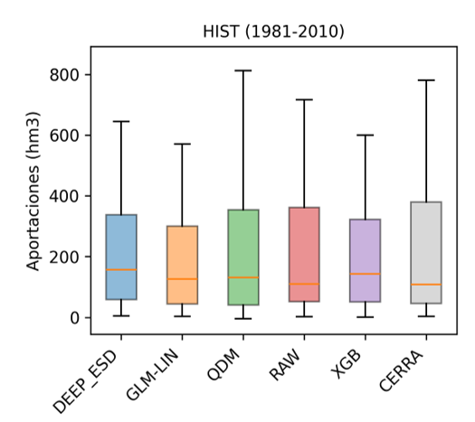
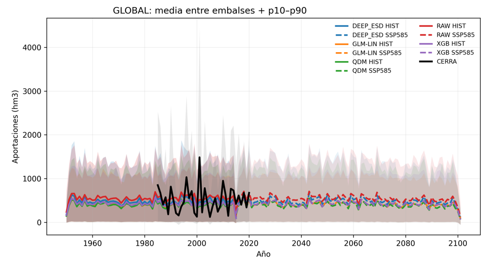
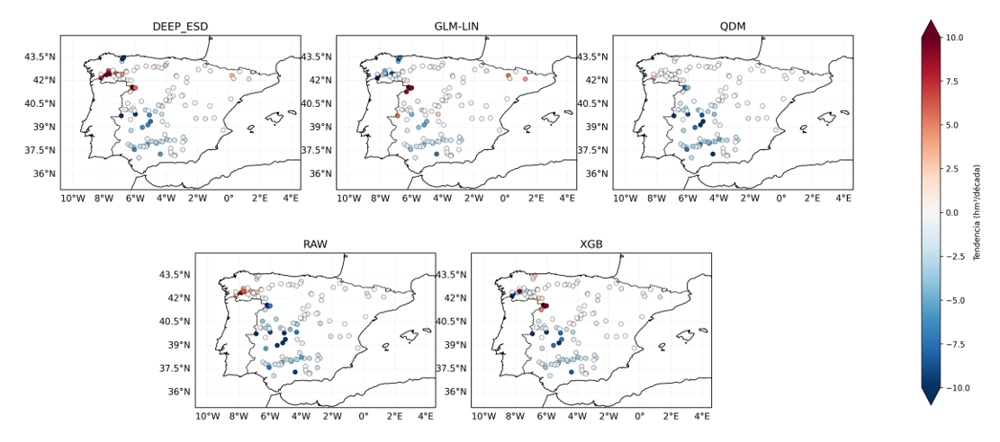
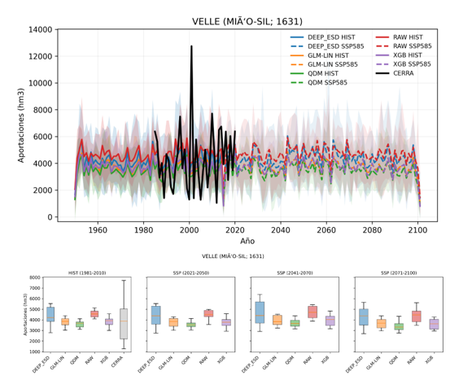
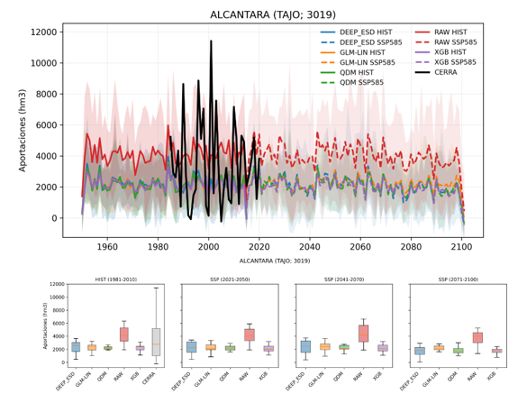
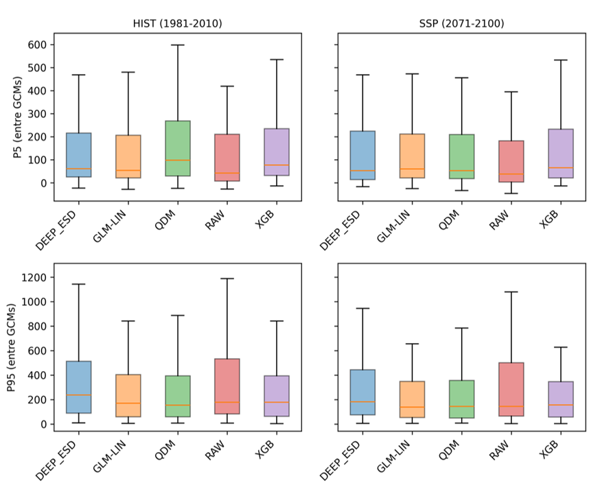

RESULTADOS
Primero se llevó a cabo un estudio comparativo de los datos observados de aportaciones y aquellos obtenidos del reanálisis CERRA-Land. Los resultados muestran una buena correlación (siempre mayor que 0.9) sin diferencias significativas.

Después, los modelos CMIP6 regionalizados utilizando distintos métodos de regionalización se validaron contra los datos de aportaciones de CERRA-Land. Los valores medios de todas las bases de datos para el periodo de estudio 1981-2010 son muy similares entre sí.

Tras verificar los buenos resultados del periodo de validación, la función obtenida con CERRA-Land se aplicó a los datos de precipitación de los modelos CMIP6.

En términos generales no se observa una tendencia clara en cuanto a un hipotético declive de las contribuciones en el clima futuro. CERRA-Land describe oscilaciones más pronunciadas que los modelos.

En áreas del suroeste, se observa un descenso de las contribuciones; en el noroeste, se ve un incremento, especialmente en las áreas cerca de Galicia. DeepESD muestra los mayores incrementos en regiones del noroeste de la península ibérica. QDM, RAW y XGB muestran el mayor descenso de las contribuciones en el sur peninsular.




El estudio de los valores extremos (p5-p95) muestra que no hay cambios significativos, aunque se observa un leve aumento de los valores extremos del percentil 95 al final del siglo XXI según el escenario SSP5-8.5.
